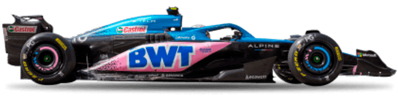

Red Bull RB20

Verstappen, Max

Checo Perez

Mercedes AMG F1 W15 E

Russell, George

Hamilton, Lewis

McLaren MCL 38

Lando, Norris

Piastri, Oscar

Ferrari SF 24

Leclerc, Charles

Sainz, Carlos

Racing Bull VCARB 01

Ricciardo, Daniel

Tsunoda, Yuki

Alpine A110

Ocon, Esteban

Gasly, Pierre

Hass VF 24

Magnussen, Kevin

HÜlkenberg, Nico

Stake C44

Bottas, Valtteri

Zhou, Guanyu

Aston Martin ARM24

Alonso, Fernando

Stroll, Lance

Williams FW 46

Albon, Alexander